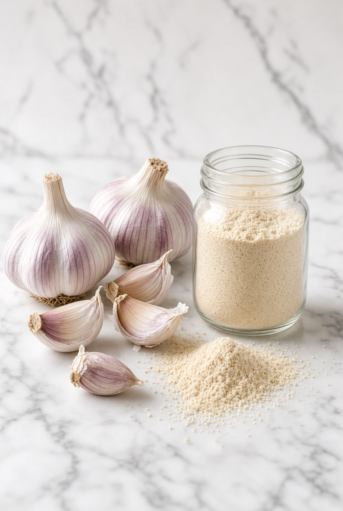
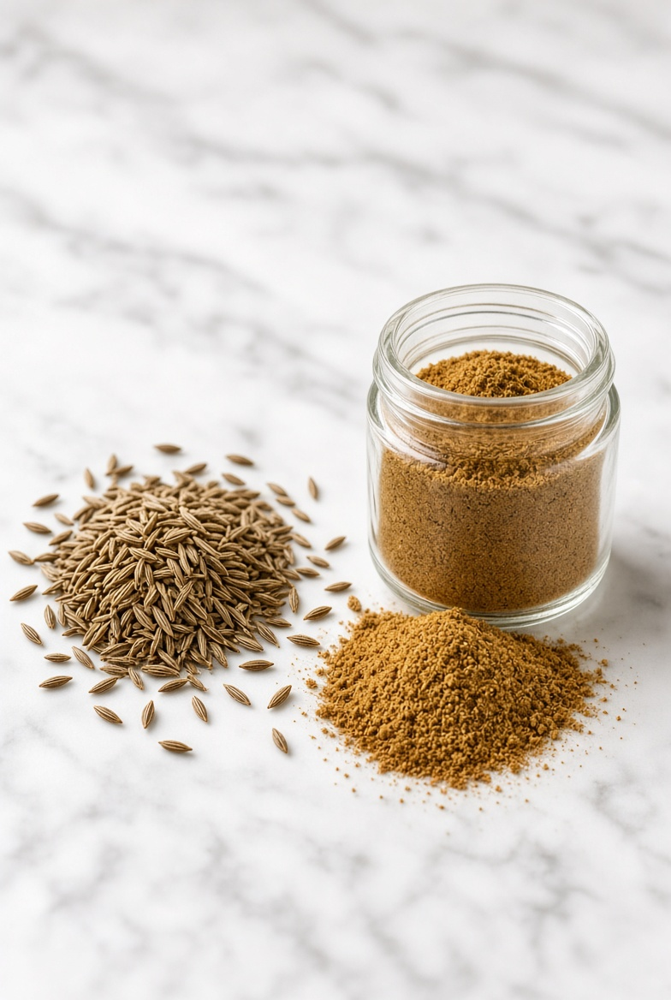
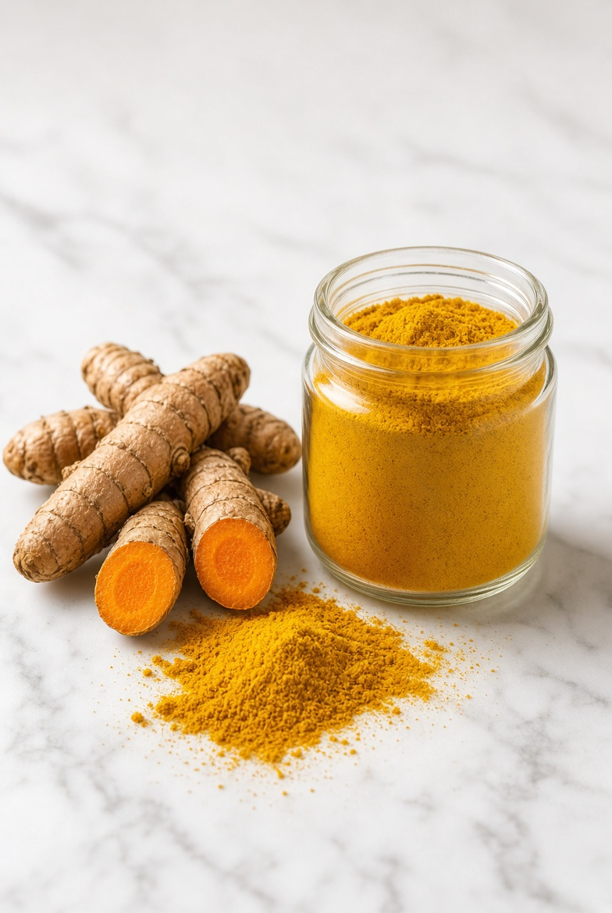
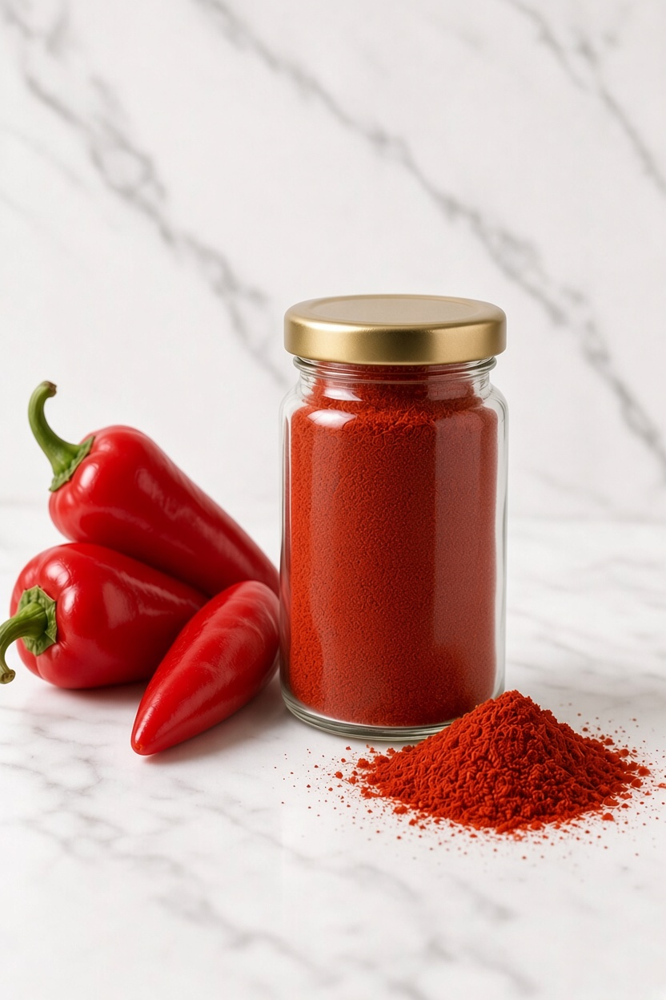
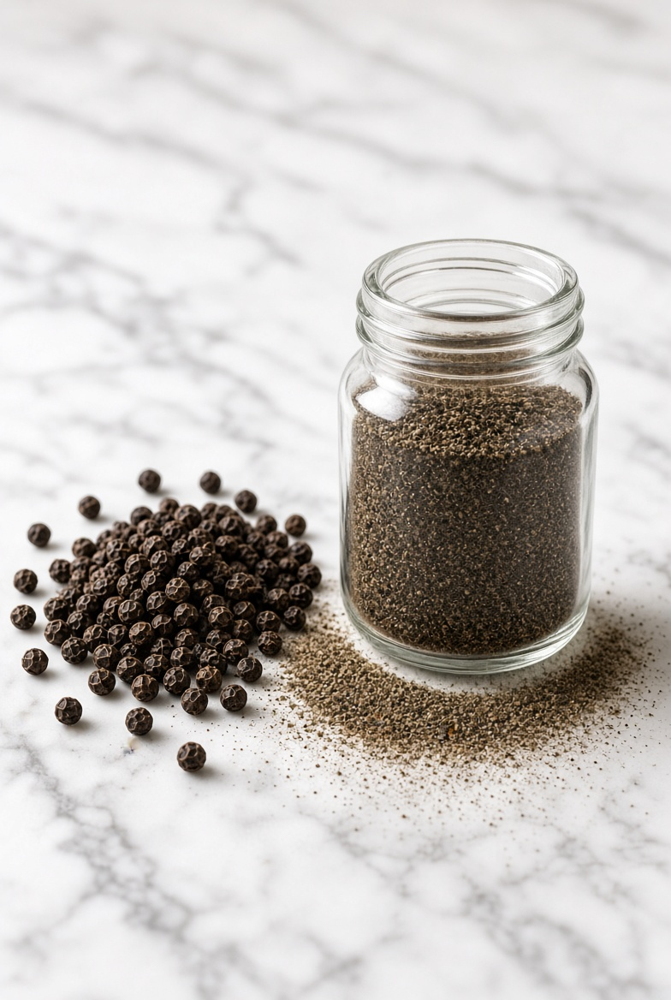

Ajo molido de aroma y sabor característicos, práctico para sazonar carnes, sopas, guisos, salsas y una gran variedad de preparaciones.
Descubre nuestra variedad de condimentos molidos, seleccionados para acompañar y realzar el sabor de tus comidas.

Ajo molido de aroma y sabor característicos, práctico para sazonar carnes, sopas, guisos, salsas y una gran variedad de preparaciones.

Comino molido de aroma intenso y sabor característico, ideal para sazonar carnes, sopas, guisos, arroces y diferentes preparaciones.

Cúrcuma molida de color, aroma y sabor característicos, ideal para dar un toque especial a arroces, sopas, carnes, guisos y diferentes preparaciones.

Paprika molida de color intenso y sabor suave, ideal para aportar color, aroma y un toque especial a carnes, arroces, sopas, salsas y guisos.

Pimienta molida de sabor ligeramente picante y aroma intenso, perfecta para realzar el sabor de carnes, sopas, salsas, ensaladas y otros platos.